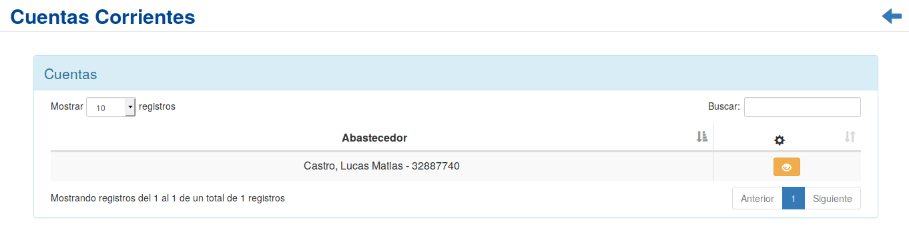
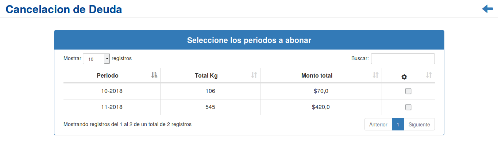
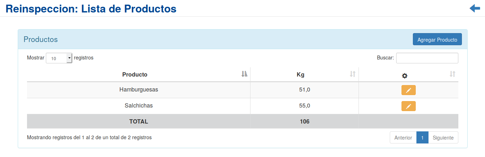
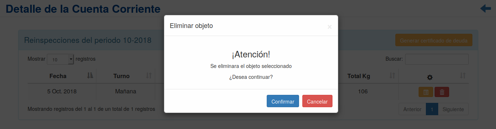

Cuentas Corrientes¶
Se presentará una pantalla que contendrá un listado con todas las Cuentas Corrientes que se encuentren registradas en el sistema hasta la fecha.
Para ingresar al detalle de una Cuenta Corriente, el usuario deberá presionar el ícono Períodos en la columna de acciones asociado a la Cuenta Corriente. Al hacero, sera redireccionado a la siguiente pantalla:
En esta pantalla se mostrara el listado de todos los períodos de facturación de la Cuenta Corriente. Junto al listado, se presentará un conjunto de funcionalidades que permitirán interactuar con la Cuenta Corriente. Estas funcionalidades son:
Cancelar Deuda¶
Si el usuario desea cancelar uno o mas de los periodos adeudados de la Cuenta Corriente, deberá presionar el botón Cancelar Deuda. Al hacerlo sera redirigido a una nueva pantalla, en la cual debera seguir una serie de pasos.
En el primer paso, se listaran todos los periodos adeudados, y el usuario deberá seleccionar los periodos que se desea cancelar:
A continuación, se deberá ingresar los datos de facturación.
Una vez finalizado el proceso, se regresara al listado de períodos de facturación de la Cuenta Corriente.
Detalle de período¶
Si el usuario desea ingresar al detalle del período, deberá presionar el ícono Detalle de período en la columna de acciones asociado al Período. Al hacerlo será redireccionado a la siguiente pantalla:
En esta pantalla, se mostrará el listado de todas las reinspecciones que componen al Período seleccionado. Junto al listado, se presentará un conjunto de funcionalidades que permitirán interactuar con el Período. Estas funcionalidades son:
Generar certificado de deuda¶
Productos¶
Si el usuario desea ver el el listado de productos de una Reinspección, deberá seleccionar en la columna de acciones asociado a la Reinspección y presionar el ícono Productos
Una vez realizado el paso anterior, el usuario sera redirigido a la siguiente pantalla:
En esta seccion, el usuario podrá verificar el listado de productos cargados en la Reinspección, modificar sus cantidades, o agregar productos faltantes.
Eliminar¶
Si el usuario desea eliminar una Reinspección, deberá seleccionar en la columna de acciones asociado a la Reinspección y presionar el ícono Eliminar
Una vez realizado el paso anterior aparecerá la siguiente ventana emergente (modal):
Aqui el usuario deberá decidir si confirma la eliminación de la Reinspección o no. Si desea confirmar la eliminación deberá presionar el botón Confirmar, caso contrario, presionará el botón Cancelar.